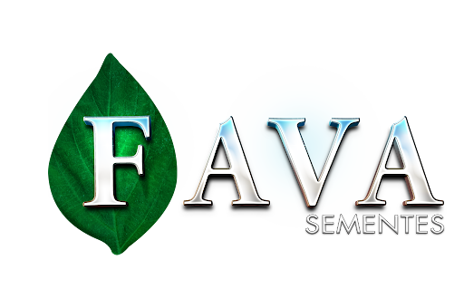

CENTRAL DE ACESSOS
Controle Agrícola
Acesso rápido e centralizado aos sistemas de gestão e operação da Fava Sementes — combustível, grãos e controle agrícola.
Novos sistemas serão adicionados em breve

Acesso rápido e centralizado aos sistemas de gestão e operação da Fava Sementes — combustível, grãos e controle agrícola.
Página institucional e catálogo de produtos da Fava Sementes.
Registro e acompanhamento das entradas de combustível na unidade.
Controle da contagem de grãos por dia e o fechamento mensal.
Monitoramento do consumo e do fluxo diário de combustível.